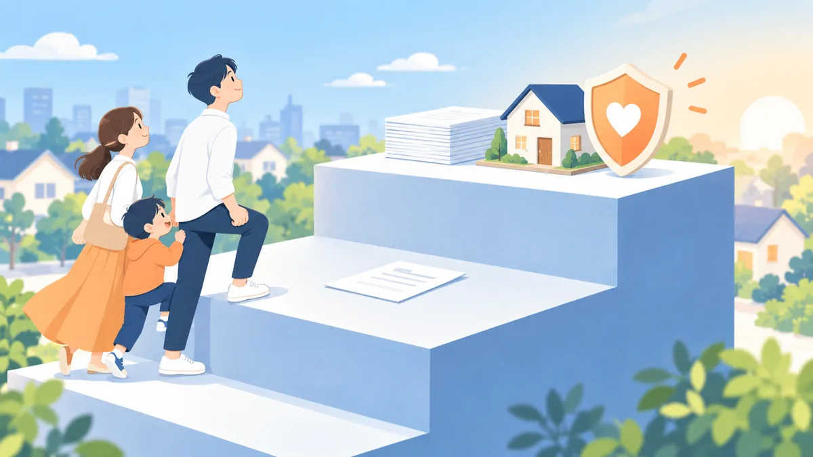

事前の確認は通ったのに、本申込みで通らなかった理由。段階ごとに見られる点の違い

住宅ローンには、物件を決める前後に行う「事前の確認」（仮の申込み）と、売買契約の後に行う「本申込み」の 2 段階があります。事前の確認が通ったのに本申込みで通らなかった、というご相談は珍しくありません。この記事では、2 つの段階で見られる点の違いと、通らなくなる典型的な理由を整理します。今週の親記事 住宅ローンが通らない人の特徴と、お断りされた後にできること の関連記事です。
- 一般的な考え方の整理です。段階の名称や確認の範囲は金融機関によって異なります。
- 実際の判断は金融機関が行います。
2 つの段階で見られる点の違い
| 事前の確認（仮の申込み） | 本申込み | |
|---|---|---|
| 目的 | おおよそ借りられそうかを短期間で見る | 正式に貸すかどうかを決める |
| 資料 | 自己申告が中心。源泉徴収票程度 | 本人確認書類、収入の証明、売買契約書、物件の資料、健康状態の告知など原本 |
| 確認する主体 | 金融機関 | 金融機関に加えて、保証会社・団体信用生命保険の引受先 |
| 物件 | 決まっていなくても可の場合がある | 担保としての評価を実際に行う |
| 期間の目安 | 数日 | 1〜2 週間程度 |
事前の確認は「自己申告の内容が正しければ検討できる」という段階です。本申込みでは、申告内容を原本で照合し、物件・保証・保険の確認が加わります。通らなくなるのは、この差の部分で起きます。
本申込みで通らなくなる典型的な理由
1. 申告内容と原本の差
年収の書き間違い、お借入れの申告漏れ（使っていないカードローン、携帯電話の分割払い、家族カードなど）が、確認の段階で分かるケースです。悪意がなくても、差があると慎重に見られます。
2. 健康状態
多くの住宅ローンでは団体信用生命保険への加入が条件になります。本申込みで告知した健康状態によって、保険の引受先が加入を認めない場合があります。この場合、金融機関の判断とは別の理由で通らなくなります。
3. 物件の評価
担保としての評価額が借入額に届かない、建築の法令に合わない部分がある、土地の権利関係に条件がある、といった物件側の理由です。ご本人の状況とは関係ありません。
4. 事前の確認から本申込みまでの変化
この間に転職した、新しいお借入れをした、お支払いが遅れた、収入合算者の状況が変わった、という変化があると、事前の確認の前提が崩れます。
5. 保証会社の判断
金融機関が検討できると考えても、保証会社の基準に合わない場合があります。同じ金融機関でも、保証会社を変えたプランなら検討できることがあります。
本申込みまでに変えてはいけないこと
- 勤務先（転職・退職・独立）
- お借入れの状況（新しいカードローン・分割払い・車のローン）
- クレジットカードやローンの支払い期日を守ること
- 収入合算者・連帯保証人の状況
- 頭金に充てる予定の資金の使い道
この期間は「何も変えない」ことが、最も確実な準備です。
本申込みで通らなかった後にできること
- 理由が物件側か、ご本人側か、保険側かの当たりをつける（不動産会社や金融機関の担当者から、差し支えない範囲で教えてもらえることがあります）
- 物件側なら、同じ物件で別の金融機関、または別の物件を検討する
- 保険側なら、団体信用生命保険の条件が緩い商品や、加入が任意の商品を検討する
- ご本人側なら、申告漏れの整理、既存のお借入れの整理、借入額の見直しをしてから、金融機関を選び直す
売買契約に「ローン特約」が付いていれば、本申込みが通らなかったときに契約を白紙に戻せることが多いです。特約の期限内に判断できるよう、早めに相談することをおすすめします。